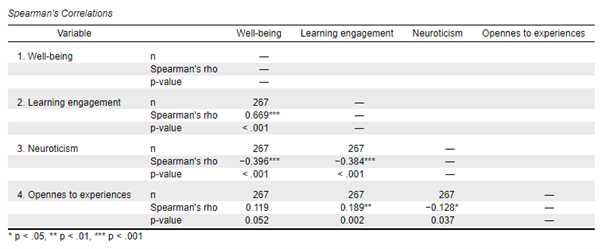

Tujuan analisis korelasi utamanya adalah untuk mengukur kekuatan dan arah hubungan antara dua variabel. Meskipun metode ini sering digunakan dalam berbagai disiplin ilmu, agar hasilnya valid, ada beberapa asumsi dasar yang harus dipenuhi, seperti normalitas distribusi data. Memahami asumsi-asumsi ini sangat penting agar peneliti dapat menarik kesimpulan yang akurat dan tidak bias. Selain itu, interpretasi hasil analisis korelasi perlu dilakukan dengan hati-hati, mengingat korelasi tidak membuktikan sebab-akibat, melainkan hanya mengukur derajat hubungan antar variabel. Sub-bab ini akan membahas asumsi-asumsi yang perlu dipenuhi dalam analisis korelasi, serta bagaimana menginterpretasikan hasil korelasi dan menuliskan laporan hasil analisis dengan cara yang jelas dan sistematis.
25.1 Asumsi dalam Hubungan Antara Dua Variabel
Uji asumsi hubungan antara dua variabel digunakan untuk menentukan teknik statistik yang digunakan dalam menghitung koefisien korelasi, apakah akan menggunakan uji korelasi parametrik (Pearson correlation; r) atau non-parametrik (Spearman correlation; rs) (Azwar, 2019; Howell, 2013). Terdapat empat asumsi yang perlu dipenuhi jika ingin menggunakan uji korelasi parametrik (Pearson correlation), yaitu:
- Kedua variabel yang diteliti atau yang ingin dikorelasikan harus berupa skala kontinum.
- Kedua variabel memiliki hubungan yang linear yang dapat dipastikan dengan menggunakan scatter plot.
- Data tidak memiliki banyak outliers.
- Data terdistribusi dengan normal.
Jika terdapat asumsi yang tidak terpenuhi, maka dilakukan uji korelasi non-parametrik menggunakan analisis korelasi Spearman.
25.2 Interpretasi dan Penulisan Hasil Uji Korelasi
Dalam melakukan interpretasi, hal pertama yang perlu dilihat adalah nilai signifikansi (p-value). Uji hubungan antara dua variabel dikatakan signifikan jika nilai p-value lebih kecil dari .05 (p < .05), artinya terdapat hubungan yang signifikan antara variabel X dan variabel Y. Jika terdapat hubungan, maka interpretasi dilanjutkan dengan melihat arah korelasi (positif atau negatif) dan besaran koefisien korelasi. Jika tidak terdapat hubungan yang signifikan (p > .05), maka interpretasi terkait arah dan derajat korelasi tidak perlu dilanjutkan. Interpretasi hasil uji korelasi dapat lebih dipahami melalui output dari analisis JASP (Gambar 25.1).

Dari output yang ditampilkan pada Gambar 25.1 diketahui bahwa well-being berkorelasi secara signifikan dengan learning engagement dan aspek kepribadian neuroticism (p < .001), namun tidak berkorelasi dengan aspek kepribadian opennes to experiences, karena p value lebih besar dari .05 (p = .052). Interpretasi terkait arah dan besaran korelasi dapat dilanjutkan pada hasil yang signifikan, diketahui terdapat hubungan positif antara well-being dan learning engagement (rs = .669), sementara itu, hubungan antara well-being dan neuroticism berkorelasi negatif (rs = -.396). Derajat kekuatan korelasi antara antara well-being dan learning engagement tergolong kuat (rentang .51 hingga .70), dan korelasi antara well-being dan neuroticism tergolong sedang/cukup kuat (rentang .31 hingga .50).
Hasil uji korelasi umumnya dilaporkan dalam bentuk tabel, jika peneliti melakukan uji korelasi beberapa variabel sekaligus, atau dalam bentuk kalimat naratif. Pelaporan hasil uji korelasi dengan menggunakan tabel dan narasi merujuk kepada gaya penulisan Publication Manual of the APA edisi ke-7. Berikut adalah contoh pelaporan hasil uji korelasi menggunakan tabel (Tabel 25.1).
| 1 | 2 | 3 | ||
|---|---|---|---|---|
| 1. | Wll-being | - | ||
| 2. | Learning engagement | .669** | - | |
| 3. | Neuroticism | -.396** | -.384** | - |
| 4. | Opennes to experience | .119 | 1.89** | -.128 |
Catatan: *p < .05, **p < .01, ***p < .001
Pelaporan hasil uji korelasi dalam bentuk naratif perlu mencantumkan beberapa unsur penting, yaitu: jenis uji korelasi yang digunakan (Pearson correlation – r, atau Spearman correlation – rs), degree of freedom (n-2), nilai signifikansi, arah dan besaran korelasi. Format penulisannya adalah:
r(df) = “koefisien korelasi”, “p-value”
Contoh:
Terdapat hubungan positif yang sangat kuat antara learning engagment dengan well-being pada mahasiswa, rs(265) = .669, p <.001.
Formulasi dan redaksi kalimat dalam menyampaikan hasil korelasi dapat disesuaikan dengan gaya bahasa peneliti, dengan memastikan bahwa seluruh unsur penting tetap disertakan dalam pelaporan. Hasil uji korelasi dapat dibuat dalam bentuk narasi seperti berikut:
“Hasil uji korelasi Pearson menunjukkan bahwa terdapat hubungan positif yang sangat kuat antara learning engagement dengan well-being pada mahasiswa (rs(265) = .669, p <.001). Selain itu, semakin tinggi karakteristik kepribadian neuroticism yang dimiliki individu, semakin rendah well-being yang dimiliki. Korelasi antara kedua variabel tergolong sedang (rs(265) = -.396, p <.001). Sementara itu, karakteristik kepribadian opennes to experiences tidak berkorelasi dengan well-being individu (rs(265) = .119, p = .052).”
📊 Analisis Korelasi
Uji normalitas data, pilih metode korelasi, dan hitung koefisiennya.